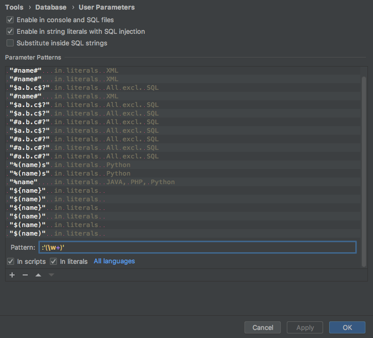

PyCharm の Database Console で PostgreSQL のプレースホルダー (インタポレーション) を SQL パラメーターとして使えるようにする
手順
-
Database Console 上で スパナのボタン ( Settings ) -> User Parameters
(もしくは、 Preferences -> Tools -> Database -> User Parameters)
-
こう
- In scripts を ON にしないと、 Database Console で使用できない
-
Apply ボタンを押下
-
OK ボタンを押下